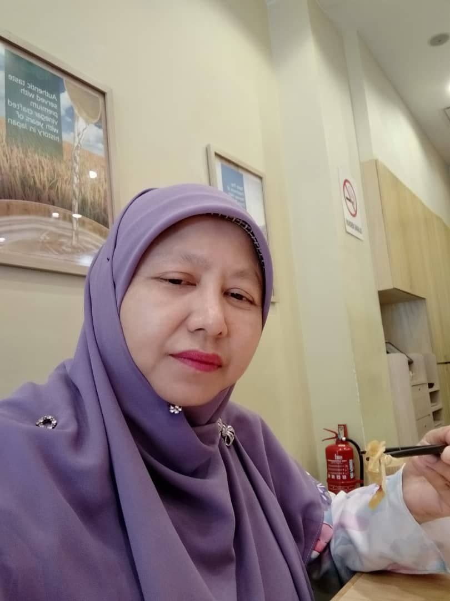
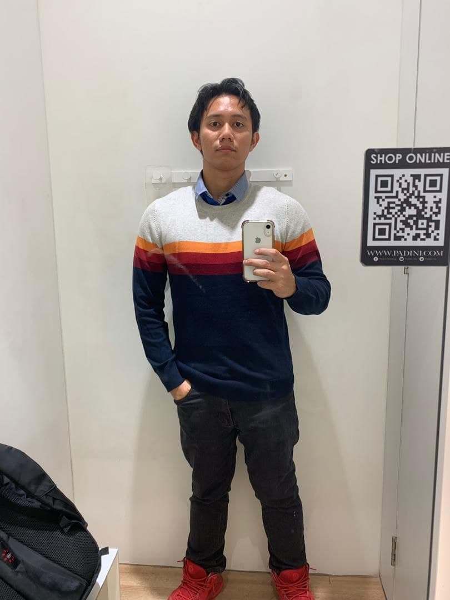
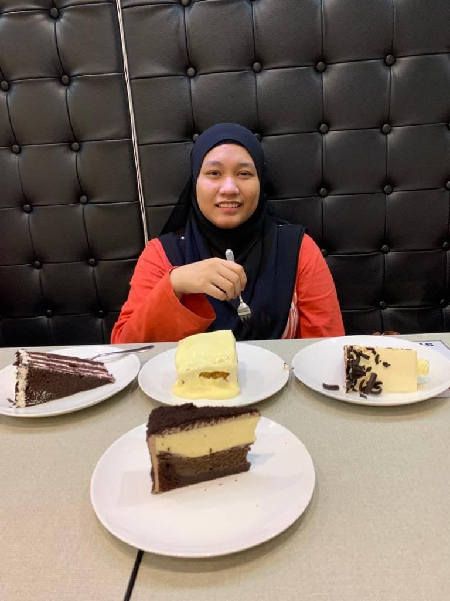

Ayah
Name:Shamsul Azmin Bin Zaini
birthday: 23 september 1966
born place: taping
work: proton
status: berkahwin
siblings: 3 orang (Shamsul Munir dan Shamsul Badrin)
Ayah
Name:Shamsul Azmin Bin Zaini
birthday: 23 september 1966
born place: taping
work: proton
status: berkahwin
siblings: 3 orang (Shamsul Munir dan Shamsul Badrin)

Mak
Name: Rosnida Binti Dahalan
Birth dater: 29 ogos 1970
Birth place: Taiping
Work: guru Smk Kelian Pauh Taiping
status: berkahwin
Siblings: 3orang (Fatimah Rohada dan Darolazam)

Abang
Name: Muhammad Zulhilmi bin Shamsul Azmin
Born date: 29 ogos 1995
Birth place: Selangor
Work: Affin Bank Kuala Lumpur
Status: single
Siblings: 3 siblings (eldest)

Kakak
Name: Hanisah Fatini binti Shamsul Azmin
Birth date: 18 december 1998
Birth place: Selangor
Work: freelancer masih mencari kerja
Status: single
Siblings: 3 siblings (middle)